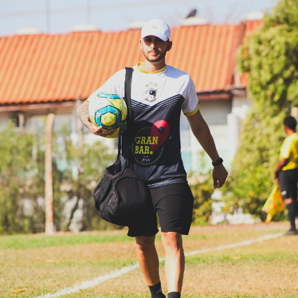
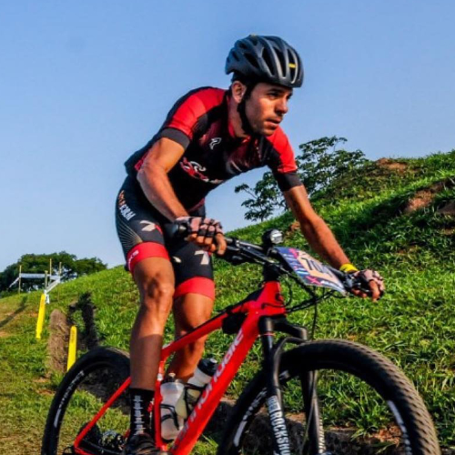

1° dia (20/10)
Apresentação do Coral
com Equipe Cultural FAM
450 vagas
Cursos Convidados
19h10
Auditório Jamil Salomão
Treino de Força: Performance, saúde e qualidade de vida
com Prof. Dr. Alexandre Evangelista
450 vagas
Cursos Convidados
19h30
Auditório Jamil Salomão
Graduado em Educação Física, com Mestrado, Doutorado e Pós-Doutorado na área da saúde. Personal trainer há mais de 20 anos, autor de 7 livros sobre estética, saúde e qualidade de vida. Diretor do Departamento Científico da rede TECFIT. Professor universitário e coordenador pedagógico do Grupo Phorte Educação, com atuação em cursos de pós-graduação na FMU e Estácio de Sá. Palestrante em eventos no Brasil e América Latina. Convidado pelo CREF.
2° dia (21/10)
Vivências profissionais em preparação física e recovery
com Prof. Leonardo Costa
450 vagas
Cursos Convidados
19h00
Auditório Jamil Salomão
Bacharel em Educação Física pela FAM (egresso FAM) CREF 185118-G/SP. Preparador físico com atuação em recovery, treinamento funcional e personal soccer. Homenageado com a medalha de mérito CREF/Câmara Municipal de Americana 2025.

Os lados positivos do trabalho negativo: Aplicações do ciclismo excêntrico
com Prof. Renan Vieira Barreto
450 vagas
Cursos Convidados
19h15
Auditório Jamil Salomão
Bacharel em Educação Física (2019) e Mestre em Desenvolvimento Humano e Tecnologias (2021) pela UNESP. Doutorando no mesmo programa e pesquisador visitante na Edith Cowan University (Austrália). Integrante do LAPH (UNESP) e pesquisador em fisiologia do exercício, exercício excêntrico, dano muscular e fadiga neuromuscular.
Wearable (tecnologia vestível) e a pessoa com deficiência
com Prof. Dr. José Igor V. Oliveira
450 vagas
Cursos Convidados
20h40
Auditório Jamil Salomão
Graduado em Educação Física pelo CAV/UFPE. Mestre e Doutor em Educação Física pela UFPE e UNICAMP, integrante de grupos de pesquisa em movimento, reabilitação e adaptações neuromusculares. Atua com tecnologias vestíveis aplicadas à pessoa com deficiência. Contato: igorvasconcelos63@gmail.com.
3° dia (22/10)
Trajetória profissional na natação infantil
com Prof. Vitória Batista Oliveira
450 vagas
Cursos Convidados
19h00
Auditório Jamil Salomão
Bacharel em Educação Física pela FAM e cursando Licenciatura pela FAM. Coordenadora e instrutora de natação infantil na Clip Academia. CREF 195566-G/SP.
Treinamento resistido: Quebrando mitos e paradigmas
com Prof. Dr. Danilo A. Massini
450 vagas
Cursos Convidados
19h15
Auditório Jamil Salomão
Graduado em Educação Física pela UNESP Rio Claro. Mestre, Doutor e Pós-Doutor em Desenvolvimento Humano e Tecnologias. Experiência em fisiologia do exercício, treinamento aeróbio e anaeróbio, desempenho humano e modelagem de dados fisiológicos.
A importância da Psicomotricidade na educação infantil
com Prof. Esp. Adélio Paulo da Silva
450 vagas
Cursos Convidados
20h40
Auditório Jamil Salomão
Graduado em Educação Física (Licenciatura e Bacharelado). Pós-graduado em Educação Especial, Psicomotricidade, Saúde Mental e Análise do comportamento Aplicada. Atuação com desenvolvimento infantil, inclusão e acompanhamento de crianças e jovens neurodivergentes, com intervenções em psicomotricidade e saúde mental.

Curta se achou a pagina útil e acompanhe Info.FAM